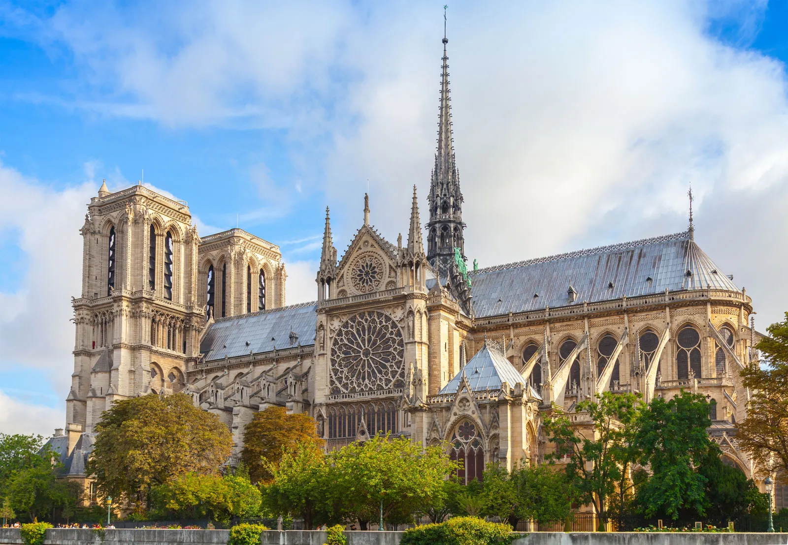

Eiffel Tower
Location : 7th arrondissement, Paris, France
Completed : 31 March 1889
Architectural : 300 m (984 ft)
OwnerCity : of Paris, France
Book now
30$
The Louver
Location : Musée du Louvre, 75001, Paris
Completed : 10 August 1793
Visitors : 8.9 million · Ranked 1st nationally
OwnerCity : of Paris, France
Book now
40$
Arc de Triomphe
Location : Place Charles de Gaulle
Inaugurated : 29 July 1836
Height : 50 m (164 ft)
OwnerCity : of Paris, France
Book now
25$

Notre Dame de paris
Location : Parvis Notre-Dame - Place Jean-Paul-II, Paris
Architectural type : Gothic
Height : 128 m (420 ft)
Completed : 1345
Book now
20$

Pont Alexandre III
Location : Paris, France
Crosses : The Seine River
Length : 160 metres (520 ft)
OwnerCity : paris
Book now
Free
.jpeg)
jardin du luxembourg
Location : 3 Rue Guynemer, 75006 Paris
Crosses : The Seine River
Area : 23 H
OwnerCity : paris , France
Book now
Free

Palais Garnie
Location : Place de l'Opéra 75009 ,Paris
Opend : 5 January 1875
Architect : Charles Garnier
OwnerCity : paris , France
Book now
50$
.jpeg)
DisneyLand
Location : Disneyland Resort · 1313 Disneyland Drive
Opend : July 17, 1955
Slogan : The happiest place on earth
OwnerCity : Disney Experiences.(The Walt Disney Company)
Book now
65$
.jpeg)
.jpeg)